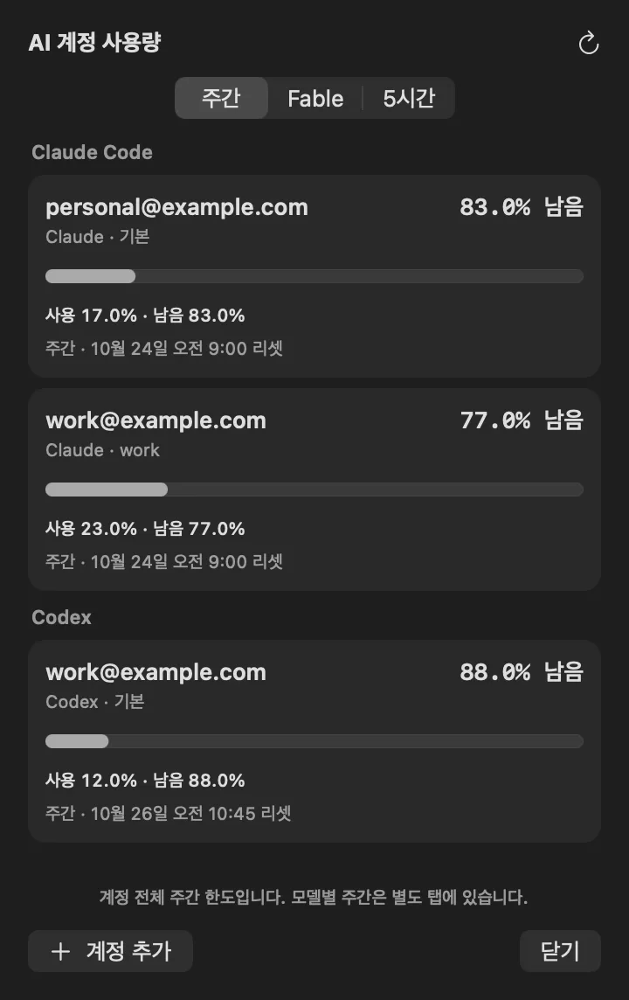
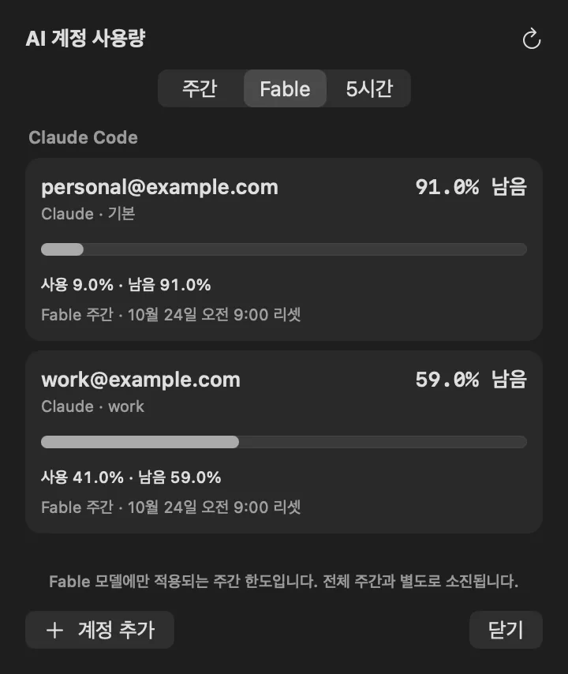
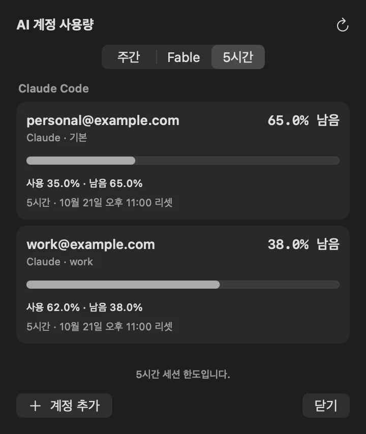
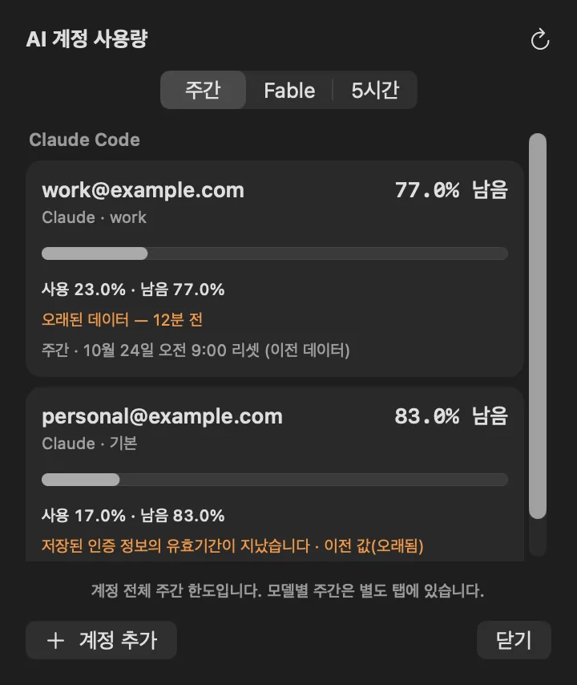
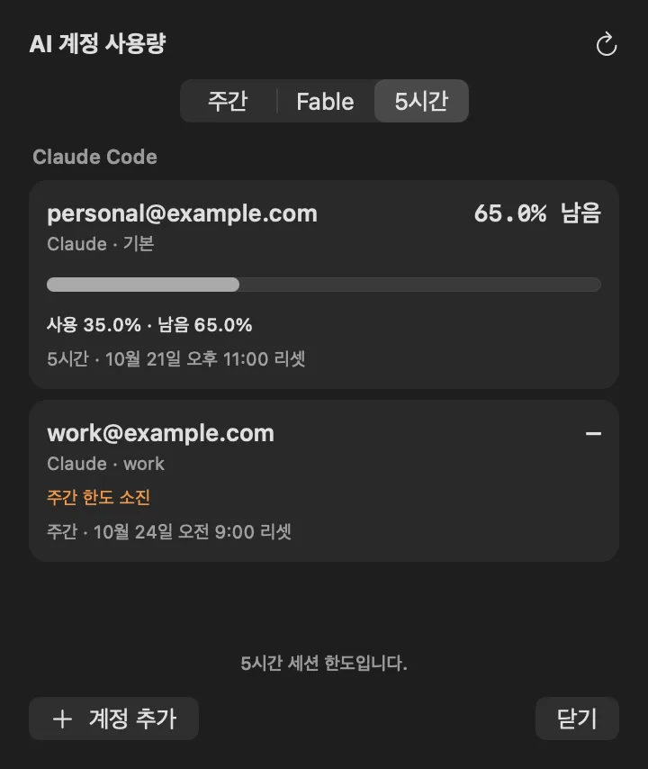

주간
계정 전체 주간 한도예요. 계정마다 남은 비율, 사용 바, 리셋 시각을 보여 줘요.

macOS 메뉴바 앱
Claude Code와 Codex 계정마다 사용량이 얼마나 남았는지 메뉴바에서 바로 볼 수 있는 macOS 앱이에요.

계정 전체 주간 한도예요. 계정마다 남은 비율, 사용 바, 리셋 시각을 보여 줘요.

Fable처럼 모델 하나에만 적용되는 주간 한도예요. 전체 주간과 별도로 소진돼요.

5시간 세션 한도예요. 그 탭의 한도가 없는 계정은 그 탭에서 숨겨요.

조회 실패, 오래된 데이터, 인증 만료는 카드에 원인을 그대로 적어요.

5시간·모델별 탭에서는 퍼센트와 사용 바 대신 —와 주간 리셋 시각만 보여 줘요.

Claude 프로필(~/.claude, ~/.claude-*)과 Codex(~/.codex)를 자동으로 찾고, 다른 프로필 폴더는 계정 추가로 등록해요. 같은 계정으로 로그인한 프로필 여러 개는 카드 하나로 합쳐요. Claude 토큰이 만료되면 CLI가 쓰는 같은 Keychain 항목에 갱신값을 저장하고, 다른 곳으로 복사하지 않아요.